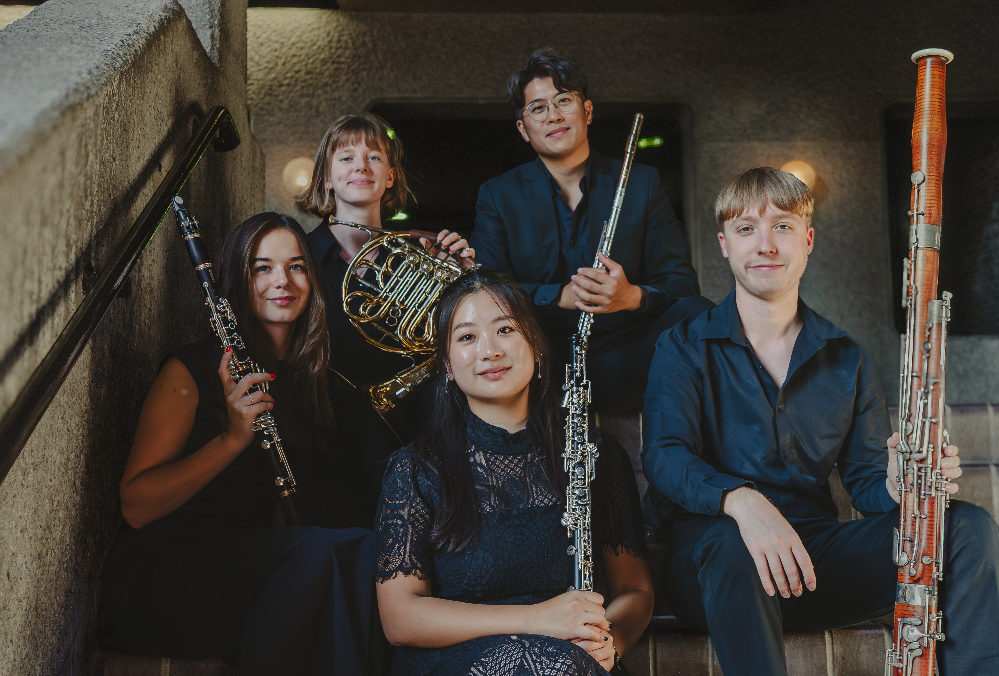

About

Orris Winds has performed at esteemed venues including LSO St Luke’s, Guildhall Chamber Festival, and The Salata Auditorium at Eton College. They are recipients of several accolades including 2nd Prize at the Luigi Nono Competition, Turin, Italy, and Royal Overseas League semi-finalists in 2026. They were also named winners of the Tunnell Trust Award 2026 which will give them the opportunity to embark on two tours of Scotland in 2027.
The group is deeply invested in education work, regularly collaborating with schools and youth organisations such as Barnet Education Arts Trust, Eton College and Guildhall Young Artists in Norwich. Through their dynamic programming and commitment to accessibility, Orris Winds seeks to celebrate the richness of wind repertoire while engaging new audiences and inspiring the next generation of musicians.